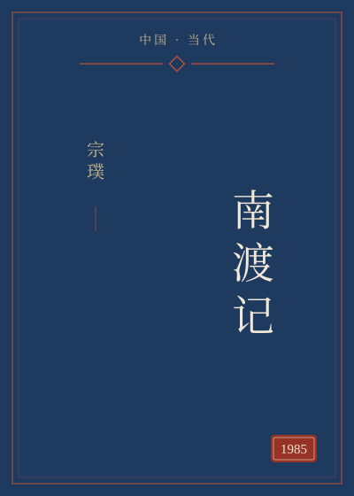
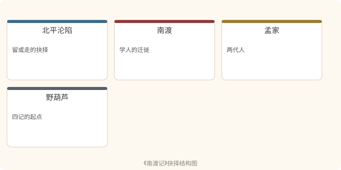

南渡记
一、基本信息
| 作者 | 宗璞 |
|---|---|
| 成书/出版 | 1985年57岁开始写作（中国作家网 C025：'从1985年57岁写《南渡记》'；《人民文学》首发说待核） 《野葫芦引》：要在葫芦里装宇宙（中国作家网）（官方文学机构） |
| 国别/地区 | 中国 |
| 时代 | 现当代 · 当代 |
| 体裁 | 长篇小说 |
| 语言 | 汉语（白话） |

《南渡记》抉择结构图（主题·结构图）
二、创作背景
中国作家网（C025）：《野葫芦引》四部——从1985年《南渡记》到2019年《北归记》历经33年；写《野葫芦引》前二记时与父亲冯友兰'同一间书房、同样的失明'（C025）。
题材：抗战爆发后北平学人南渡——明纶大学（影射西南联大，通说待核）。
三、内容脉络
卢沟桥事变后，孟樾一家与学人们的南渡抉择（通说待核）。
薇、嵋、合子等下一代的成长起点（通说待核）。
四、主要人物表
| 人物 | 身份 | 说明 |
|---|---|---|
| 孟樾（孟弗之） | 教授 | 学人代表（通说待核） |
| 嵋（孟嵋） | 少女 | 下一代视角（通说待核） |
五、主题与艺术特点
- '南渡'的历史抉择（C025）。
- 学人气节的家庭记忆（C025：冯友兰之女）。
- 典雅语言的战争书写（通说）。
六、影响与评论
- 中国作家网：历经33年完成四记（C025）。
《野葫芦引》：要在葫芦里装宇宙（中国作家网）（官方文学机构） - 中国作家网：第二卷《东藏记》获第六届茅盾文学奖（C025）。
《野葫芦引》：要在葫芦里装宇宙（中国作家网）（官方文学机构）
七、阅读建议
难点
- 联大前史（北平沦陷）。
- 书卷气的叙事节奏。
- 《南渡记》（人民文学出版社，通说待核）。
四记顺读：《南渡记》→《东藏记》→《西征记》→《北归记》。
八、待核实
- 1986年首发（《人民文学》说）核对。
- 孟家人物与影射对应核对。
- '野葫芦'题解待核。
本页主要来源
宗璞的其他收录作品：东藏记